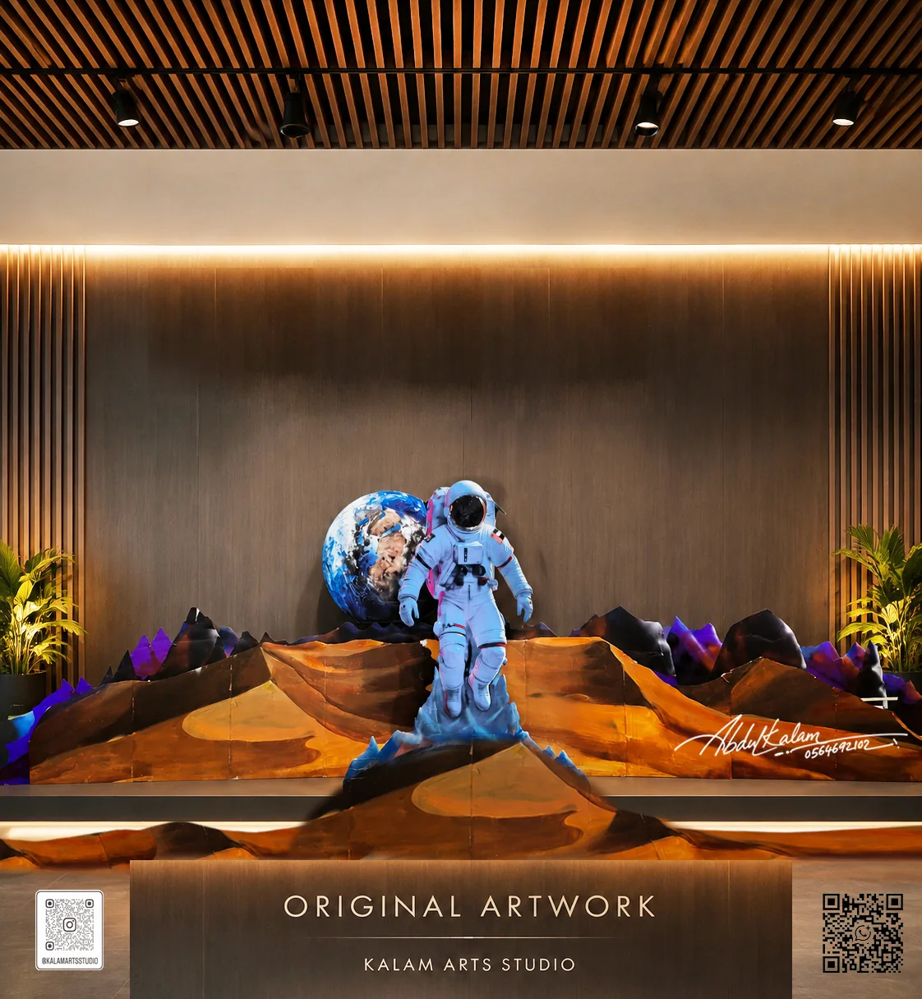
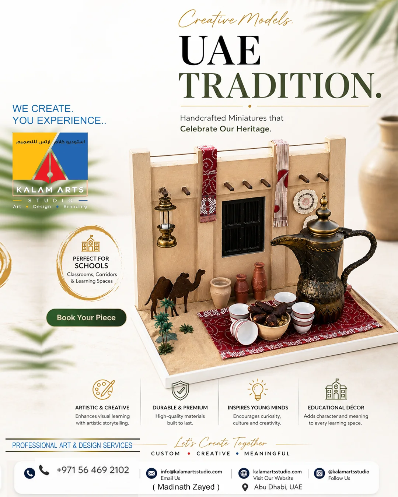

Custom 3D models, scale models & dioramas in Abu Dhabi
We create scale models, dioramas and detailed craft structures using suitable materials and a process planned around your brief, display needs and deadline.

What is a custom 3D model service?
KALAM ARTS STUDIO plans and creates custom 3D models, scale models, dioramas and miniature display builds in Abu Dhabi, UAE. Projects can begin with a hand sketch, reference photographs or a technical drawing. The studio discusses scale, dimensions, materials, finish and display needs before confirming a scope.
Send your concept, drawing or reference images, overall size and deadline for a project review.
3D Models & Craft for your brief.
The right result depends on its purpose, proportions, materials and the way it will be used or displayed. We begin with those details before recommending a direction.
Physical models planned around the intended scale, viewing distance, dimensions and display purpose.
Layered scenes that bring a place, story, setting or concept into a compact three-dimensional display.
Material options can be discussed according to the shape, weight, level of detail, surface finish and intended use.
Share a sketch, reference set or technical drawing so the important proportions and features can be identified before making.
One-off builds for personal, educational, presentation and event requirements, scoped individually.

From first reference to final finish.
For school deadlines, personal commissions or business projects, clear project information helps us give a realistic recommendation.
Share
Send the idea, reference images, purpose and deadline.
Define
Discuss size, materials, finish, quantity and scope.
Create
Develop the work with attention to detail and presentation.
Handover
Review the final work and coordinate the handover.
Good to know before you enquire.
Send the model purpose, reference photographs or sketches, available drawings, overall dimensions, preferred scale, quantity, display location and required date. If some details are not decided, send the brief you have and the studio can identify what still needs clarification.
You can share an AutoCAD export, PDF drawing, sketch or reference images. The studio will review the available information and discuss whether it is detailed enough to plan the physical model.
Depending on the design, the discussion may include foam, PVC, resin and other suitable craft materials. The choice depends on shape, structure, weight, detail, surface finish and how the model will be handled or displayed.
Yes, dioramas and miniature scenes are part of the studio’s 3D craft focus. Share the scene concept, approximate footprint, key objects and any reference images to begin a scope discussion.
A quotation depends on dimensions, scale, complexity, material, quantity, finish and deadline. Send those details where possible so the studio can review the project rather than estimate from a title alone.
Discuss your project with KALAM ARTS STUDIO
Based in Abu Dhabi. Enquiries from Dubai and other UAE locations are welcome; project feasibility and handover arrangements are confirmed individually.